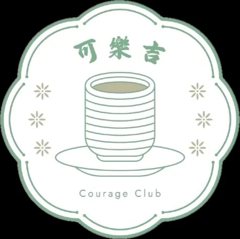

小昀｜語言治療師｜31歲
「吃了超多邪惡食物⋯我以為又完蛋了，結果整個人輕鬆到不敢相信！」
生了兩個小孩，公司聚餐多、完全沒時間備餐，體態一直是小昀最在意的事。跟著崇銘調整之後，她說最大的收穫是：「以前聚餐前都要緊張很久，現在我知道怎麼吃了，聚餐完整個人還是很輕鬆。」
個人體驗，效果因人而異
可樂吉健康研究所當投入、能力和成果不成比例，真正需要調整的，往往不是意志力。
你有能力執行。
你也願意投入。
但生活情境沒有被納入方法裡。
測驗會從你的天賦狀態、內在驅動、行動模式與七個底層面向，找出你真正容易卡住的位置。
報告示意，實際結果依個人測驗而異。
AI 幫你把資料整理出來。你會知道：有哪些優勢、容易在哪裡卡住，以及最適合從哪裡開始。
有動力、有方向、願意行動，學習與應變能力不差。
用更多努力補結構問題，生活被打亂後過度補救，習慣自己扛。
外食也能執行的固定結構、加班或聚餐替代方案、每天簡短回報、體感加紀錄。
AI 幫你把資料整理出來。我會陪你把結果變成每天做得到的策略。
Hi，我是崇銘。5 分鐘，先把你的身體卡在哪裡搞清楚
我陪過很多人認真調整體態，他們都有一個共同點，每一個人都努力試過了，每一個人最後都說同一句話：
「我已經這麼努力了，為什麼身體就是不給我面子？」
我後來才慢慢搞清楚：這些人卡住，通常不是因為不夠努力。是因為他們一直在回答「要怎麼做」，但沒有人幫他們先搞清楚「身體到底卡在哪裡」。結果就是方法換了一個又一個，每次都是同樣的結局。
所以我這幾年做的事，就是先幫你把那個卡住的點找出來，再根據你真實的生活，三餐外食、常有聚餐、加班、沒時間運動，設計一條你真的走得通的路。
你不需要先把生活變完美，再開始調整。從現在的狀態出發就可以。
第一次來的人，通常進門後就放鬆了。這裡沒有健身房的壓迫感，也不像診所，就是一個可以坐下來、把話慢慢說完的空間。
坐下來、喝杯水，把你的狀況從頭說一遍，不用整理、不用準備，就這樣開始就好。很多人說，光是說出來，就已經覺得輕鬆一點了。
生了兩個小孩，公司聚餐多、完全沒時間備餐，體態一直是小昀最在意的事。跟著崇銘調整之後，她說最大的收穫是：「以前聚餐前都要緊張很久，現在我知道怎麼吃了，聚餐完整個人還是很輕鬆。」
個人體驗，效果因人而異慧琴以前身體有一段特別辛苦的時期，沒辦法做太多運動，飲食也亂。後來跟著崇銘調整飲食之後，精神跟以前完全不同。讓她最印象深刻的是有一天教會朋友和家人一起問她：「你最近做了什麼改變？你整個人的氣色都不一樣了。」
個人體驗，效果因人而異代餐、飲食法，靖雯每一樣都試過，每一樣都撐不久。她說以前遇到的方式都讓她很有壓力，稍微沒做到就開始自責。跟著崇銘的感覺完全不同：「他讓我按照自己的步調，整個過程很自然，我才發現，原來這樣是可以持續下去的。」
個人體驗，效果因人而異私訊後，崇銘會親自傳送問卷連結給你